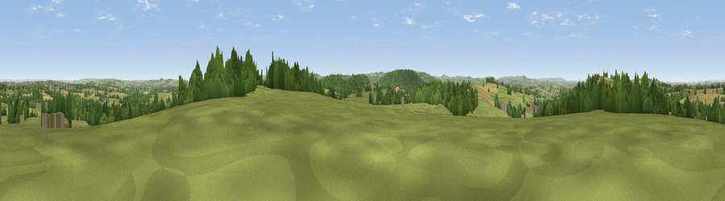

Viewpoint near East Coker
#12469 in England · top 28% of its area beats it · near East CokerWhere it is
The exact computed spot (ST 53025 12225). Click the marker for map links.
The view, rendered

A 360° render of this exact spot computed from the terrain model, tree cover and land cover — summer colours, afternoon light, calibrated against photographs of famous viewpoints. Real trees, hedges and buildings will differ in detail.
The panorama
Grey silhouette: terrain skyline in each direction (720 bearings, Earth curvature and refraction included). Dashed green: skyline with trees (+15 m) and buildings (+8 m) as obstacles. Blue strip: how far the ground is visible on each bearing.
Where the view opens
Wedge length = distance to the farthest visible ground on that bearing (vegetation-aware). Rings at 10, 25 and 50 km.
What fills the view
54% grassland · 25% woodland · 18% cropland · 3% built-up
Angular shares of the visible panorama (visual magnitude), not map area. Landscape diversity 0.48 (0–1 Shannon).
Key numbers
More beautiful places nearby
The staircase of upgrades: each row has a higher view potential than everything closer. Driving times are estimates from straight-line distance, calibrated against real road routing — check an actual route before setting out.
| Place | Direction | Drive | Score |
|---|---|---|---|
| Viewpoint near West Coker | WNW · 2 km | ~4 min | 60.3 |
| Viewpoint near Odcombe | NW · 4 km | ~10 min | 63.4 |
| Montacute Castle | NW · 6 km | ~13 min | 69.5 |
| Viewpoint near Montacute | NW · 6 km | ~13 min | 69.8 |
| Ham Hill | NW · 7 km | ~15 min | 73.5 |
| Viewpoint near North Poorton | S · 12 km | ~23 min | 77.0 |
| Viewpoint near Hewish | W · 13 km | ~23 min | 78.5 |
| Lewesdon Hill | SW · 14 km | ~26 min | 83.3 |
50.90757, -2.66948 · source: screening · position refined by local search. Computed location — check access rights before visiting.